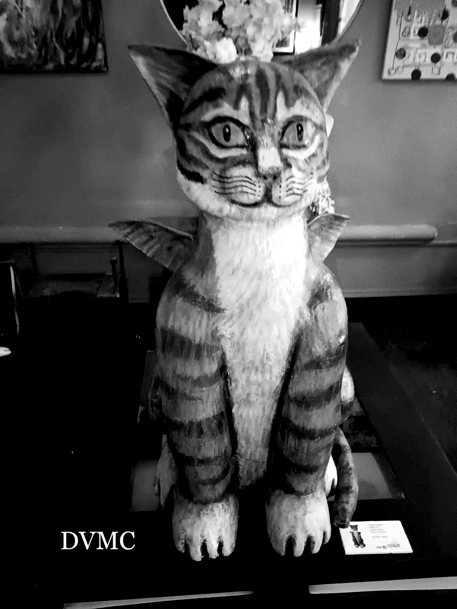
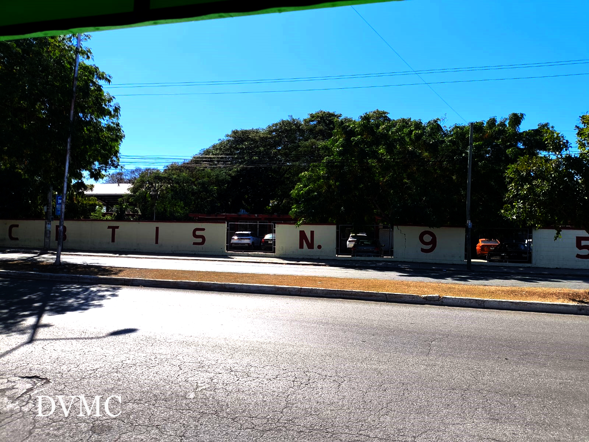
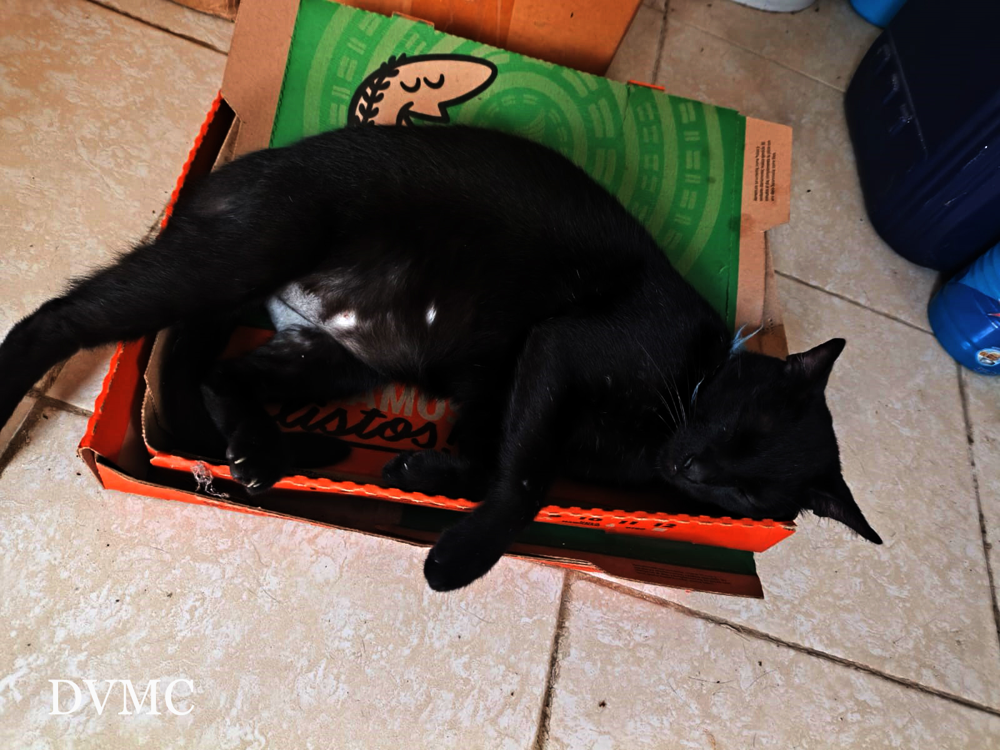
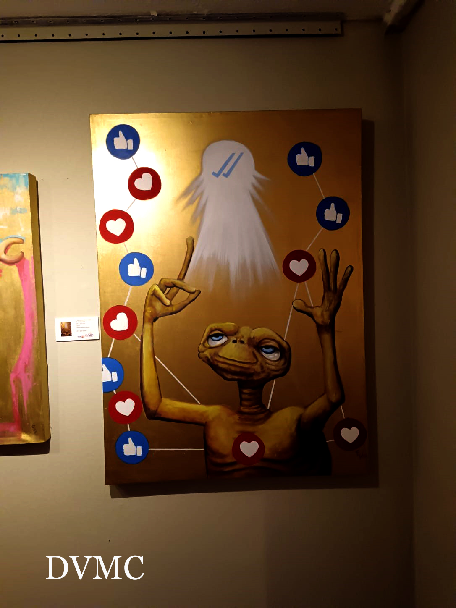
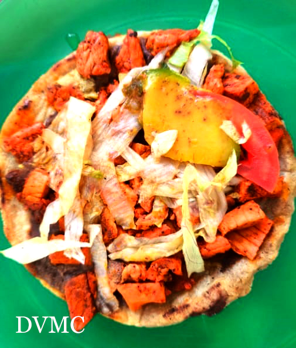
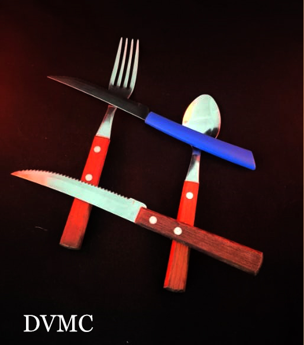

Inicio
hey, como andan. en esta pagina, encontraras fotografias tomadas durante el cuatrimestre y retocadas y editadas, estas fotos son parte de la materia laboratorio de fotografia, impartida por el profesor eduardo mendez lazaro
informacion personal
Me llamo dereck, me gusta Jugar videojuegos, películas y dibujar, creo historias ficticias, me gusta hacer videos y salir con mis amigos a pasear y soy un fanatico de la saga de videojuegos halo y gears of wars
Galeria

Escultura
fotografia tomada durante el recorido del merida fest 2026

Ciudad
fotografia con mas cielo que suelo, luz de dia y plano general

Gatito
fotografia con angulo cenital, luz de dia y plano general

E.T
Fotografia de un lienzo tomado durante el merida fest 2026

Macro comida
fotografia con angulo cenital, luz natural y plano detalle

Cubiertos
Fotografia con angulo cenital, luz calida y plano general